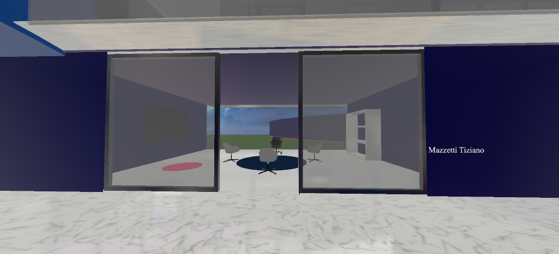
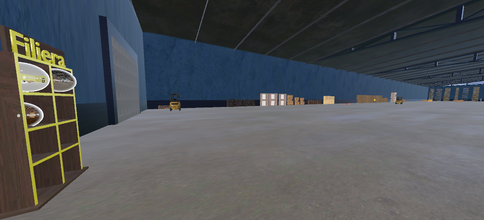
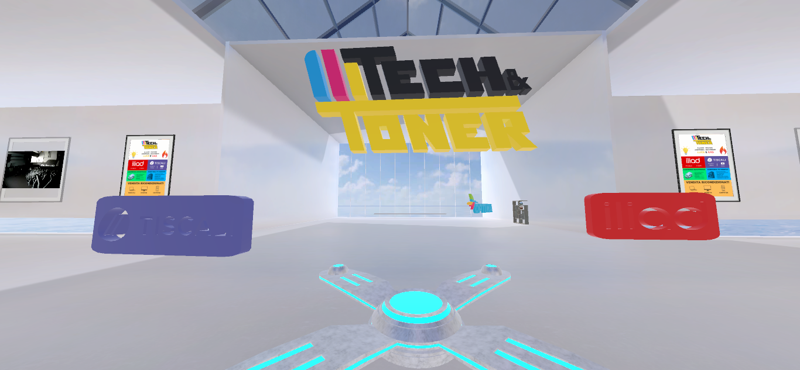

Progetto e sviluppo mondi virtuali immersivi per business, eventi, formazione e intrattenimento. Creo esperienze 3D interattive che connettono persone da tutto il mondo in spazi digitali coinvolgenti.
Spazi espositivi 3D per presentare prodotti e servizi in modo innovativo. I visitatori possono esplorare, interagire e acquistare in un ambiente immersivo.
Organizzazione di fiere, concerti e meeting in ambienti metaverso personalizzati con networking, stand espositivi e sale conferenze.
Aule virtuali, laboratori e ambienti di training immersivi per formazione aziendale, corsi e workshop interattivi.
Definizione degli obiettivi, target audience e funzionalità desiderate. Creazione di concept art AI e architettura dell'ambiente virtuale.
Sviluppo di asset 3D ottimizzati, texturing e creazione dell'ambiente completo con attenzione alle performance e all'estetica.
Implementazione delle meccaniche, sistemi di networking, interazioni con oggetti e integrazione di funzionalità innovative.
Test di usabilità, ottimizzazione performance, beta testing con utenti reali e deployment su piattaforme metaverso (Spatial, custom).

Nella mia esperienza precedente, avevamo bisogno di un luogo virtuale dove fare lezione e caricare materiale per lo studio in tempo reale.
Creata una colossale soluzione con più di 100 stanze virtuali, ognuna collegata ad una lezione e a loro volta unite tra loro, in maniera da creare un flow di apprendimento unico.
In poco più di una settimana abbiamo realizzato l'ambiente per intero, per noi e per i futuri partecipanti all'esperienza della classe virtuale.

Era stata commissionata una stanza VR che doveva mostrare tutta la vita di un bene materiale, dalla fabbrica al consumatore.
Creato un ambiente con 4 sub-stanze, ognuna visitabile in qualsiasi ordine, che mostrava: Fabbrica, Stoccaggio, Vendita e Consumatore.
Progetto consegnato ad una fiera di Confindustria locale ed ottenuto alto indice di gradimento.

Un negozio di assistenza informatica aveva bisogno di uno showroom virtuale sui servizi offerti.
Creato ampio ambiente open-space virtuale, in cui sono stati caricati sia filmati che immagini a scopo promozionale.
Curiosità aumentata e di conseguenza affluenza da parte dei consumatori che visitavano lo showroom virtuale da visore.
Piattaforme e strumenti per creare metaversi di qualità
No, gli ambienti che creo sono accessibili da browser web, smartphone e PC senza necessità di visori VR. Tuttavia, offro particolare supporto per visori Meta Quest, per un'esperienza ancora più immersiva.
Dipende dalla piattaforma e dall'infrastruttura scelta. Posso creare ambienti che supportano da 20-30 utenti simultanei fino a centinaia di partecipanti per eventi su larga scala, con architetture scalabili basate su cloud.
Assolutamente sì! Posso integrare wallet crypto, token NFT, sistemi di pagamento blockchain e meccaniche play-to-earn nel tuo metaverso, utilizzando smart contract su Ethereum, Polygon o altre blockchain.
Un ambiente base può richiedere 3-4 settimane, mentre progetti complessi con funzionalità avanzate possono richiedere 2-4 mesi. La timeline dipende dalla complessità degli asset 3D, delle interazioni e delle integrazioni richieste.
Certamente! Gli ambienti metaverso sono progettati per essere facilmente aggiornabili. Posso aggiungere nuovi asset, organizzare eventi temporanei e implementare nuove funzionalità in qualsiasi momento.
Discutiamo del vostro progetto e creiamo un mondo virtuale che stupirà i vostri utenti!